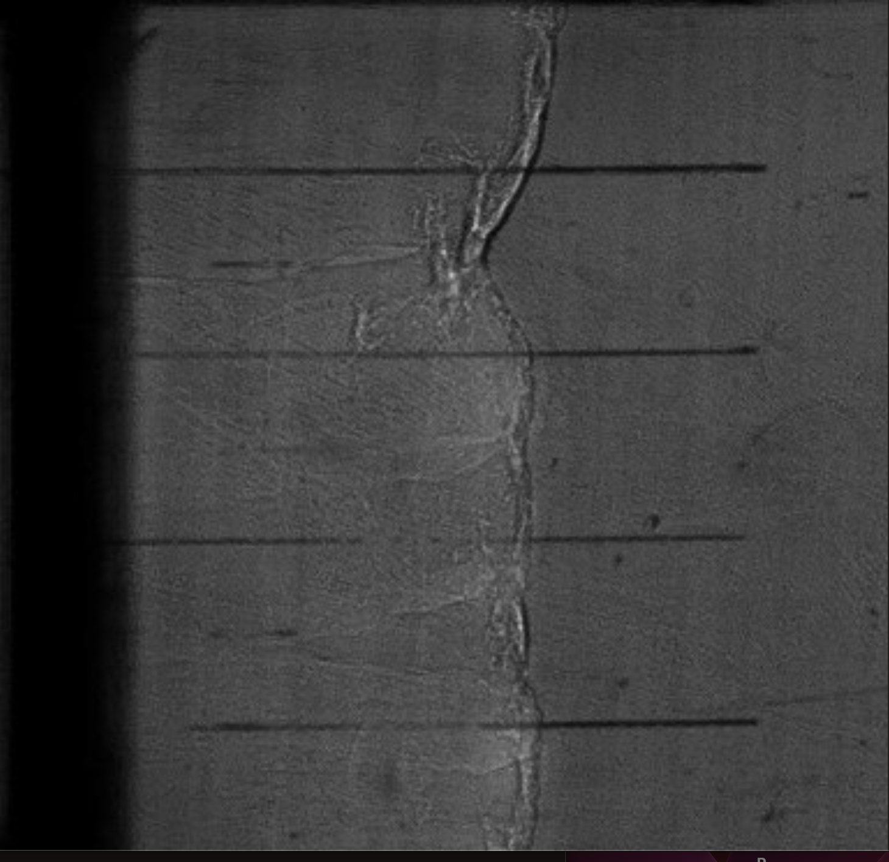

Schlieren Diagnostic System for Flow Visulaization
My thesis involved the end-to-end design and calibration of a schlieren imaging system for detonation diagnostics, as well as the development of a four-layer, current-amplifying PCB for high-speed LED pulsing, capable of maintaining signal integrity at nanosecond edge rates. I designed and integrated all aspects of the diagnostic system, including a lab-constrained optical layout and alignment, software for triggering and synchronizing the ignition, high-speed cameras, the light source, and an impedance-controlled PCB. The most challenging aspect was correctly designing the PCB to maximize signal integrity at such high edge rates. My design required a thorough understanding of each component and the underlying physics of how signals behave at high speeds. Layering, trace characteristics, grounding, component placement, via placement, and shielding, all needed to be considered when designing the circuit to minimize loss and rise time. Throughout this project, I gained valuable experience with design, experimental testing, and complex systems.
View Thesis Report (PDF)